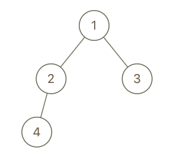
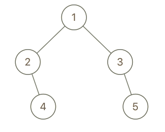
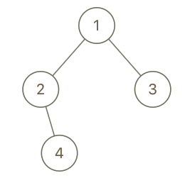

993. 二叉树的堂兄弟节点
一趟 DFS 记下每个值的深度和父值；x、y 深度相同且父不同才是堂兄弟。
思路
- DFS 时把
(深度, 父值)存进按值下标的数组，值域 1~100，查询 O(1)。 - 堂兄弟的条件是两条：深度相同、父结点不同——兄弟结点会卡在第二条上。
- 父值唯一（题目保证值不重复），用父值比较即可，不用存结点引用。
图解
最优解
1class Solution {2 private final int[] depth = new int[101], parent = new int[101];3 4 public boolean isCousins(TreeNode root, int x, int y) {5 dfs(root, 0, 0); // 根没有父结点，父值记 06 // 堂兄弟 = 深度相同，父结点不同7 return depth[x] == depth[y] && parent[x] != parent[y];8 }9 10 // 一趟 DFS 把每个值的深度、父值都记下来11 private void dfs(TreeNode node, int par, int d) {12 if (node == null) return;13 depth[node.val] = d;14 parent[node.val] = par;15 dfs(node.left, node.val, d + 1);16 dfs(node.right, node.val, d + 1);17 }18}题目
在二叉树中，根节点位于深度 0 处，每个深度为 k 的节点的子节点位于深度 k+1 处。
如果二叉树的两个节点深度相同，但 父节点不同 ，则它们是一对堂兄弟节点。
我们给出了具有唯一值的二叉树的根节点 root ，以及树中两个不同节点的值 x 和 y 。
只有与值 x 和 y 对应的节点是堂兄弟节点时，才返回 true 。否则，返回 false。
示例 1： 
输入：root = [1,2,3,4], x = 4, y = 3 输出：false
示例 2： 
输入：root = [1,2,3,null,4,null,5], x = 5, y = 4 输出：true
示例 3：

输入：root = [1,2,3,null,4], x = 2, y = 3 输出：false
提示：
- 二叉树的节点数介于
2到100之间。 - 每个节点的值都是唯一的、范围为
1到100的整数。
题面取自力扣当前版本。
数据快照 2026-11-04。题面版权归力扣所有，本站点仅供本人学习使用，请勿对外发布。